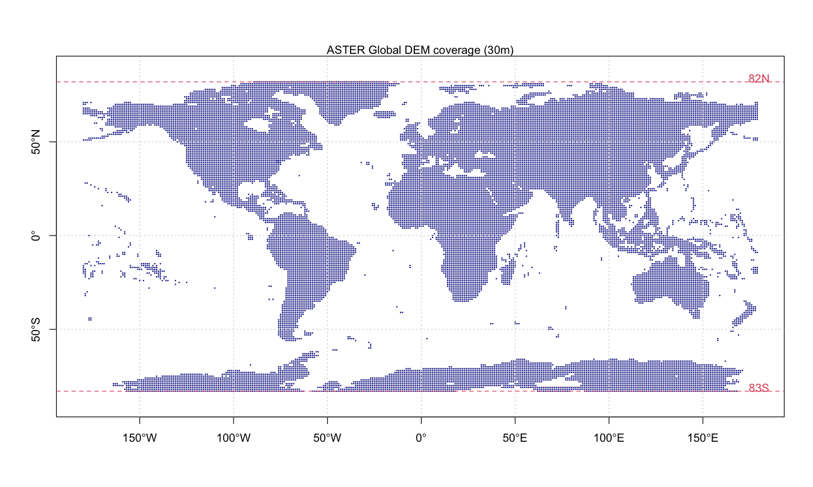
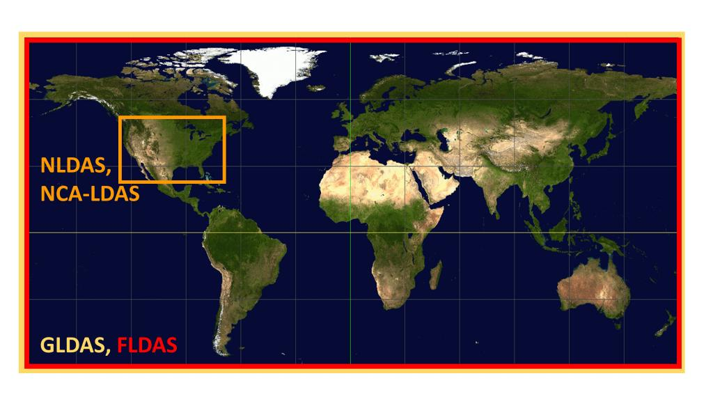

Chapter 2 Methodology
2.1 Data Repository
| Category | Data name | Feature | License | Data source |
|---|---|---|---|---|
| Elevation | ASTER GDEM | Global 30m | Public Domain | |
| Landuse | USGS Land Cover | Global 1km | Public Domain | |
| Soil | HWSD v1.0 | Global 1km | Public Domain | |
| Reanalysis forcing data | GLDAS | Global 0.25deg, 1950- | Public Domain | |
| Reanalysis forcing data | FLDAS | Continental 0.1deg, 1979- | Public Domain | |
| Reanalysis forcing data | NLDAS | US 0.125deg, 1979- | Public Domain | |
| Reanalysis forcing data | CLDAS | China 0.125deg | private | |
| Reanalysis forcing data | CMFD | China 0.1deg | private | |

ASTER Global DEM

GLDAS, FLDAS, NLDAS, NCA-LDAS覆盖范围